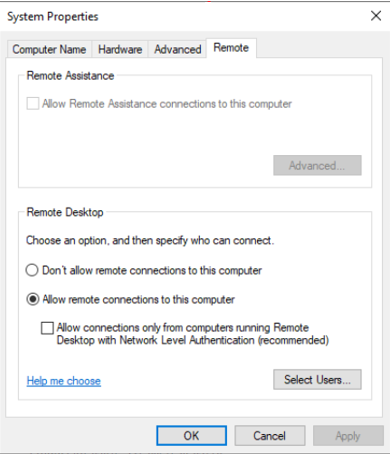

Scenarios
This section describes how to log in to a Windows ECS from a Linux computer.
Prerequisites
- The target ECS is running.
- You have bound an EIP to the ECS.
- Access to port 3389 is allowed in the inbound direction of the security group to which the ECS belongs.
- Data can be exchanged between the login tool and the target ECS. For example, the default port 3389 is not blocked by the firewall.
- RDP has been enabled on the target ECS. By default, RDP has been enabled on the ECSs created using a public image. For instructions about how to enable RDP, see Enabling RDP.
Procedure
To log in to a Windows ECS from a local Linux computer, use a remote access tool, such as rdesktop.
- Run the following command to check whether rdesktop has been installed on the ECS:
rdesktop
If the message "command not found" is displayed, rdesktop is not installed. In such a case, obtain the rdesktop installation package at the official rdesktop website.
- Run the following command to log in to the ECS:
rdesktop -u Username -p Password -g Resolution EIP
For example, run rdesktop -u administrator -p password -g 1024*720 121.xx.xx.xx.
Table 1 Parameters in the remote login command Parameter
Description
-u
Username, which defaults to Administrator for Windows ECSs
-p
Password for logging in to the Windows ECS
-f
Full screen by default, which can be switched using Ctrl+Alt+Enter
-g
Resolution, which uses an asterisk (*) to separate numbers. This parameter is optional. If it is not specified, the remote desktop is displayed in full screen by default, for example, 1024*720.
EIP
EIP of the Windows ECS to be remotely logged in. Replace it with the EIP bound to your Windows ECS.
Enabling RDP

By default, RDP has been enabled on the ECSs created using a public image.
- Log in to the Windows ECS using VNC.
For details, see Login Using VNC.
- Click Start in the task bar and choose Control Panel > System and Security > System > Remote settings.
The System Properties dialog box is displayed.
Figure 1 System Properties
 - Click the Remote tab and select Allow remote connections to this computer.
- Click OK.